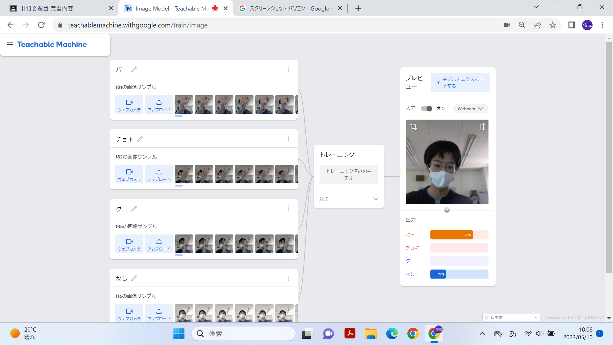
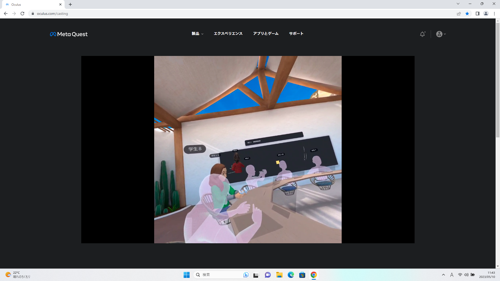

第2週目
2-1 １週目のレポートをHTMLで作る
１週目のレポート
1.内容
レポートを作る
2.感想
自分のURLがくるまで時間がかかったりなど手間取ることが
多かったが無事レポートを完成させることが出来てよかった。
2-2 機械学習体験

1.内容
Teachable Machineを使って手の形を認識する人工知能をつくる
2.感想
じゃんけんの手の形を認識する簡単なものだったが、それでも面白いと思った。
前回体験したブロックプログラミングとはまた違う面白さがあった。パーの資料
の中に顔が混ざっているとグーだと誤認識されたりしたのでとても繊細なんだと
知った。
2-3 VR（バーチャルリアリティー：Virtual Reality）会議室の体験

1.内容
メタバース体験 設定をして、会議室に入る
2.感想
設定に手間取ってしまったが手順通りに会議室にまで入ることが出来た。
以前、ニュース番組でメタバースが紹介されており存在は知っていたが、今回初めて使った。
リモートワークで活用されたらしく今までにない働き方だと思い印象に残っている。このよ
な技術を学び知っていきたいという興味が出てきた。